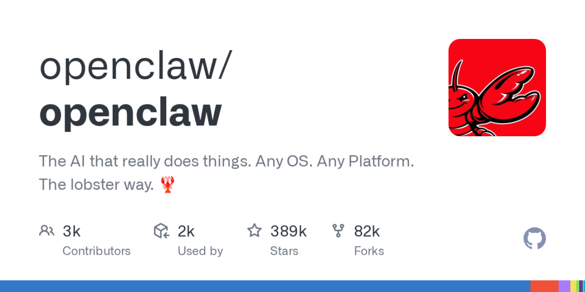

"智能体到底能干啥？" 最近总有人这么问。
问了的人，多半还停留在「跟 AI 聊天」的阶段：问一嘴、答一句、聊完就忘，转头得出一个结论——智能体不过是个高级搜索引擎，没什么用。
但真正把智能体用起来的人，早就不跟它闲聊了。他们只做一件事：给智能体装任务。
一、智能体不是没用，是没被「派活」
同样一个智能体，在两个人手里是两种东西：
▪️ 闲聊模式：今天问个问题，明天聊个话题，用完即弃。它记得再多，也只是一个被动的聊天框
▪️ 任务模式：给它一个明确的活儿，让它记住怎么干，然后定时自动执行。它才真正变成你的「数字员工」
最典型的例子就是定时自动完成一份数据分析：每周五下午，数据自动拉取、自动分析、自动生成结论，准时摆在你面前。
不用提醒、不用重复交代，到点就出活——这才是智能体的正确打开方式。
那问题来了：怎么让智能体「听懂」一个任务？
二、让智能体干活，先想清楚三件事
一个任务能不能跑起来，取决于你有没有说清三件事：
✅ 1. 数据来源：数据从哪来？
数据可以来自很多地方，关键是说清楚入口：
▪️ 本地文件：电脑里某个文件夹的某个文件，或者整个文件夹
▪️ 在线表格：飞书表格、在线 Sheet 等（需要授权给它访问）
▪️ API 接口：公司的业务系统、第三方服务提供的接口，数据可以定时拉取
▪️ 互联网：公开网页、行业资讯、竞品动态，让智能体主动去抓取
✅ 2. 分析方法：用什么方法分析？
方法是智能体的「思考方式」，说清楚它才知道往哪个方向使劲：
▪️ 看趋势、做对比、算占比
▪️ 找异常、做预测、归因分析
✅ 3. 呈现要求：结论长什么样？
呈现要求决定交付质量，说多细它就交付多准：
▪️ 分析结论要包含哪些内容
▪️ 用什么格式呈现（报告、表格、图表）
▪️ 是否要给出建议或下一步动作
这三件事想清楚了，任务就成了一大半。剩下的，就是让它「记住」这个任务。
三、Skill：把任务「装进说明书」
每次都用对话重新交代一遍？太累，也没必要。
这就是 Skill（技能） 的价值：把任务变成一份「说明书」，一次定义、永久复用。
Skill 里装的就是上面那三件事：任务名称、数据来源、分析方法、呈现要求。定义好之后：
▪️ 下次只要说一句「跑一下 XX 分析」，它自己就知道去哪拿数据、怎么分析、怎么呈现
▪️ 定时任务也能挂上去：每天、每周、每月，到点自动执行
▪️ 换个人、换台机器，Skill 跟着走，活儿不变
越是重复的活，越值得装成 Skill——周报、月报、数据监控、竞品跟踪……这些都是 Skill 的完美场景。
四、创建 Skill，现在简单到「说人话」
很多人一听 Skill 就头大，以为要写代码、配一堆参数。其实现在的创建方式，简单到令人意外：直接在智能体上，用大白话说就行。
不需要手动去搭建，打开对话直接说：
"我希望创建 XXX 的 Skill（任务明确的名称），数据来源是我电脑某个文件夹的某个文件（或者某个文件夹、或者某个在线表，需要授权），需要你根据数据里面的 XX 数据，以 XX 方式去做分析，我希望的分析结论包含：XXX。"
就这样，一个 Skill 就建好了。
进阶：数据来源也可以是 API 或互联网——比如「每天从 XX 接口拉取销售数据，分析后汇总到日报」，或者「每周抓取竞品官网和行业资讯，整理成竞品动态周报」。只要是稳定、可重复的数据入口，都能装进 Skill。
五、两个进阶技巧，让效果翻倍
技巧 1：表单样式固定 → 说清行列 → 让它写 Python
如果你的表格格式很固定（比如每周导出的报表结构都一样），那就把「哪一列是什么数据、哪一行是什么含义」跟它说清楚，然后让它把分析写成 Python 脚本。
好处很明显：脚本跑起来比反复读表快得多，而且每次都按同一套逻辑执行，结果稳定、不出错。
技巧 2：想要创意化分析 → 呈现要求别固化太死
反过来，如果你希望它创意化地分析，那就别把呈现要求定得太死。
给一个宽松的指引：「你看看有什么有意思的角度，随便发挥」——留出空间，它反而能给你惊喜。
一句话总结：表单固定就锁死流程求稳，创意分析就放开要求求新。
📌 总结
智能体不是没用，是你还没给它「装任务」。
人的工作靠惯性，智能体的工作靠说明书。把一件每周都要做的重复活，用「数据来源 + 分析方法 + 呈现要求」三句话说清楚，装成一个 Skill——从今往后，它到点自动出活，你只管验收结果。
从今天起，挑一件你最烦的重复活，跟智能体说清楚三件事，装一个 Skill 试试。
你会发现：不是智能体不行，是以前没人给它派过活。
关注 OpenClaw 研习社，一起把 AI 真正用起来 🚀